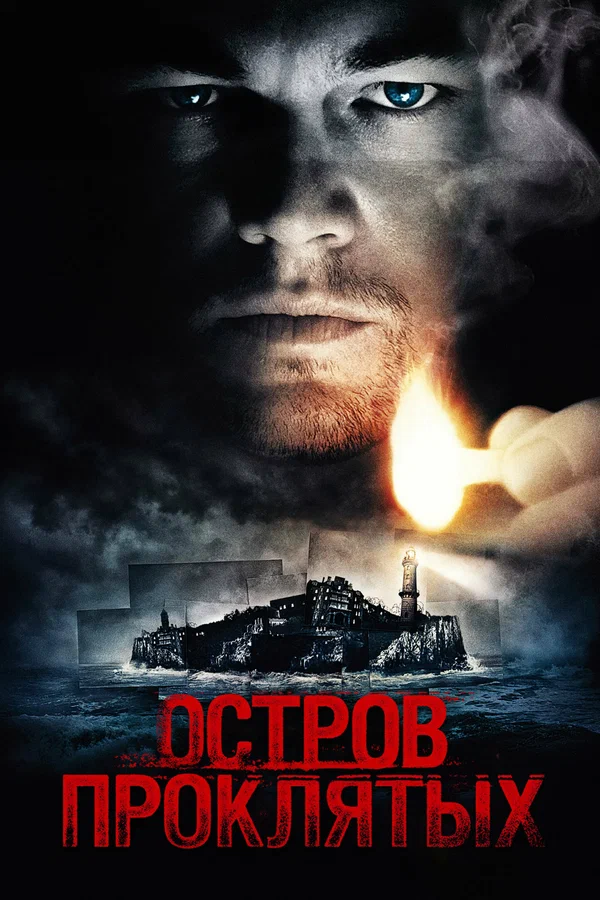

5 лучших фильмов по версии Кинопоиска
-

Остров проклятых
Два американских судебных пристава отправляются на один из островов в штате Массачусетс, чтобы расследовать исчезновение пациентки клиники для умалишенных преступников. При проведении расследования им придется столкнуться с паутиной лжи, обрушившимся ураганом и смертельным бунтом обитателей клиники.
Оценка: 8.4
Режиссёр: Мартин Скорсезе
-

Джентльмены
Один ушлый американец ещё со студенческих лет приторговывал наркотиками, а теперь придумал схему нелегального обогащения с использованием поместий обедневшей английской аристократии и очень неплохо на этом разбогател. Другой пронырливый журналист приходит к Рэю, правой руке американца, и предлагает тому купить киносценарий, в котором подробно описаны преступления его босса при участии других представителей лондонского криминального мира — партнёра-еврея, китайской диаспоры, чернокожих спортсменов и даже русского олигарха.
Оценка: 8.6
Режиссёр: Гай Ричи
-

Побег из Шоушенка
Бухгалтер Энди Дюфрейн обвинён в убийстве собственной жены и её любовника. Оказавшись в тюрьме под названием Шоушенк, он сталкивается с жестокостью и беззаконием, царящими по обе стороны решётки. Каждый, кто попадает в эти стены, становится их рабом до конца жизни. Но Энди, обладающий живым умом и доброй душой, находит подход как к заключённым, так и к охранникам, добиваясь их особого к себе расположения.
Этот фильм получил оценку в 9.1 балл.
Оценка: 9.1
Режиссёр: Фрэнк Дарабонт
-

Интерстеллар
Когда засуха, пыльные бури и вымирание растений приводят человечество к продовольственному кризису, коллектив исследователей и учёных отправляется сквозь червоточину (которая предположительно соединяет области пространства-времени через большое расстояние) в путешествие, чтобы превзойти прежние ограничения для космических путешествий человека и найти планету с подходящими для человечества условиями.
Оценка: 8.7
Режиссёр: Кристофер Нолан
-

1+1
Пострадав в результате несчастного случая, богатый аристократ Филипп нанимает в помощники человека, который менее всего подходит для этой работы, – молодого жителя предместья Дрисса, только что освободившегося из тюрьмы. Несмотря на то, что Филипп прикован к инвалидному креслу, Дриссу удается привнести в размеренную жизнь аристократа дух приключений.
Оценка: 8.9
Режиссёры: Эрик Толедано, Оливье Накаш
3 лучших фильма в жанре Хоррор
-

Очень странные дела
1980-е годы, тихий провинциальный американский городок. Благоприятное течение местной жизни нарушает загадочное исчезновение подростка по имени Уилл. Выяснить обстоятельства дела полны решимости родные мальчика и местный шериф, также события затрагивают лучшего друга Уилла – Майка. Он начинает собственное расследование. Майк уверен, что близок к разгадке, и теперь ему предстоит оказаться в эпицентре ожесточенной битвы потусторонних сил.
Этот фильм получил 8.4 баллов.
Оценка: 8.4
Режиссёры: Мэтт Даффер, Росс Даффер, Шон Леви
-

Чужой
В далеком будущем возвращающийся на Землю грузовой космический корабль перехватывает исходящий с неизвестной планеты сигнал. Экипаж, в соответствии с основными инструкциями, обязан найти и исследовать источник сигнала. Оказавшись на планете, астронавты повсюду обнаруживают предметы, по виду напоминающие гигантские коконы
Оценка: 8.1
Режиссёр: Ридли Скотт
-

Ходячие мертвецы
Зомби-эпидемия захлестнула планету. Шериф Рик Граймс путешествует с семьей и небольшой группой выживших в поисках безопасного места. Но постоянный страх смерти каждый день приносит тяжелые потери, заставляя товарищей по несчастью чувствовать глубины человеческой жестокости. Рик пытается спасти близких и понимает, что всепоглощающий страх людей может быть опаснее ходячих мертвецов.
Оценка: 8.0
Режиссёр: Грег Никотеро